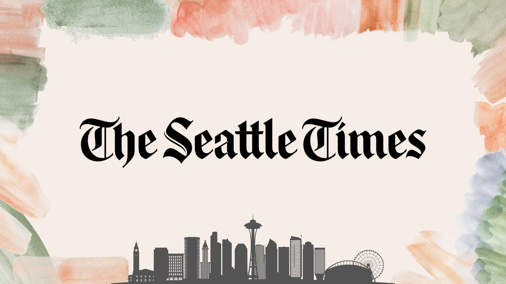
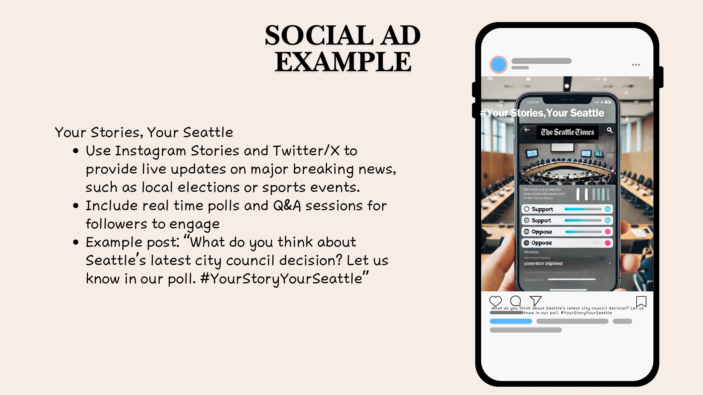
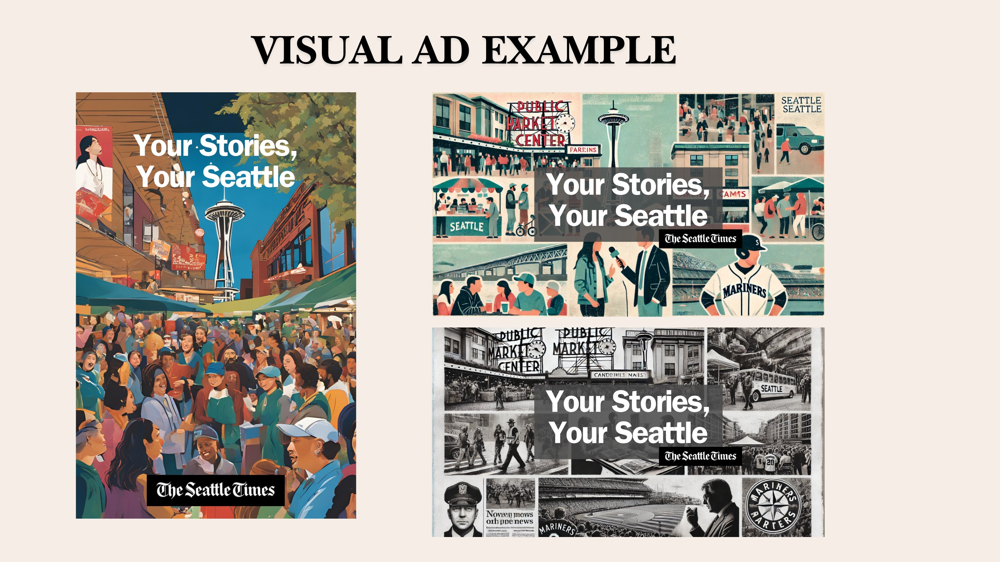

The Seattle Times
A research-led digital strategy for making local journalism more accessible and participatory.

Local value is hidden behind digital friction.
Younger audiences want relevant, trustworthy local news but often meet low awareness, paywall resistance and perceptions of political bias before they experience the reporting itself.

Listen across behavior, conversation and competition.
Interviews, social listening, Meltwater analysis, audience data, brand review and a consumer journey map revealed where trust forms, where access breaks and how national platforms shape expectations.
Young readers want news that connects them to a life they recognize.
Accessibility matters, but so do relevance and participation. Local journalism becomes distinctive when it helps audiences understand, question and contribute to the community around them.

Your Stories, Your Seattle.
A digital-first platform uses live updates, polls, Q&As and social storytelling to turn trusted community reporting into an ongoing exchange rather than a one-way article experience.
From thought
to touchpoint.
- Audience research
- Brand analysis
- Consumer journey
- Creative brief
- Social and visual executions
“The strongest defense of local journalism is not scale. It is making proximity feel useful, visible and shared.”